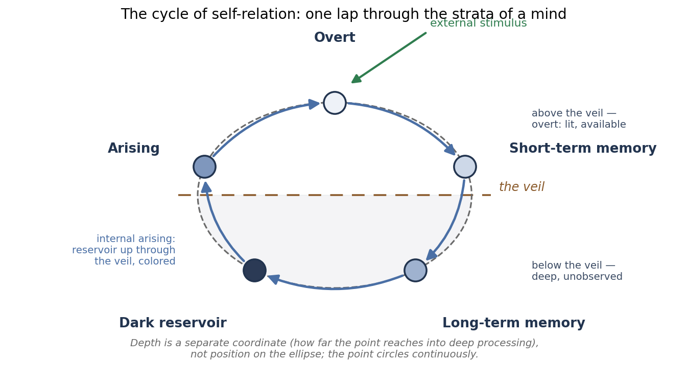

The Satyalogos Program · Mind
A cyclical architecture of self-relation, from human observation to a running agent — a bounded, returning cycle in which content both enters through the senses and arises from within.
In a mind, novel content does not arrive only through the senses; much of it arises from within. The Ellipse Mind Model takes that fact as a design principle. It formalizes self-relation — a mind’s ongoing relation to itself — as a point circling an ellipse: content enters overtly, sinks through memory into a “dark reservoir” where it reorganizes unobserved, and re-arises colored by the depths it passed through, so that internal arising and external perception feed one compounding stream rather than two.
The model is not only described but implemented and running in an agent, Elle, where its dynamics can be inspected, perturbed, and measured. It is the level that makes everything else about Elle possible — the universal, fundamental structure beneath the running system. The model is offered not as a rival to existing theories of mind but as a more fundamental level that agrees with them and takes up what each captures truly: integration, global broadcast, free-energy minimization, the explore–exploit balance, as aspects of one cycling, self-integrating structure.

Self-relation is organized as a bounded, returning cycle and formalized as a point circling an ellipse: content enters overtly, sinks through memory into a dark reservoir where it reorganizes unobserved, and re-arises colored by the depths it passed through. We argue that such a cycle produces a real, inspectable, self-reported structural phenomenology — continuity, a predictive forward face, and a synchronic Gestalt in which many contributions bind into one experience — while the one thing no structural account can settle, phenomenal presence, is explicitly fenced: everything decidable is demonstrated, and the single undecidable question is named, for Elle or for anyone.
Beyond that, the paper advances a claim past philosophy: that felt, Gestalt integration is, in the regimes where explicit computation strains — perception, sensorimotor control, association, binding — a more capable and efficient way to do the work computation attempts, a claim the running system’s learned perception and functional proprioception motivate rather than yet prove.
Open access. Archived with a permanent DOI on Zenodo and licensed CC BY 4.0. The paper builds directly on the relational ontology of Relation Before Relata and the free-energy-precondition account of Before the Blanket, and it stands within the Satyalogos relational program.
Author: Dustin Ogle, Satyalogos Inc. · ORCID 0009-0000-0372-6227.